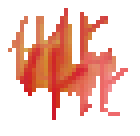

1952, Yasuoka, Japan.
The end of our village seems inevitable. Recently disappearances and rumours about shape shifting creatures roaming the woods increased. All the women already fled. Except for me only two men, Adam and Evan, remain. I wish I could do something to rescue my home. But I only seem to get in the way of others. Tonight I will put and end to this and commit sudoku.
ーNouke Takashi [能化 陸]
You're Takashi's spirit and have the ability to temporarily turn men into women. Help repopulate your village! Careful though: if a person is seen while you change their sex, they'll be hunted down for being a shape shifter.
You have 24 hours left before your spirit vanishes into the plain of high heaven.
Population: -
Hours left: -
〔壱〕 Offspring resulting from encounters under your influence seems to be exclusively male. To trigger migration into the village and secure the continued survival of your home it has to reach a population of at least 15.
〔弐〕 Villagers are afraid to be alone and therefore seek the company of others. You can, however, lure individuals away from a group.
〔参〕 Villagers may loose their mind and behave strangely from time to time. Waiting usually solves the provlem.
🚹🚺
N　O　U　K　E
move with arrow keys, shift with shift.
click to start